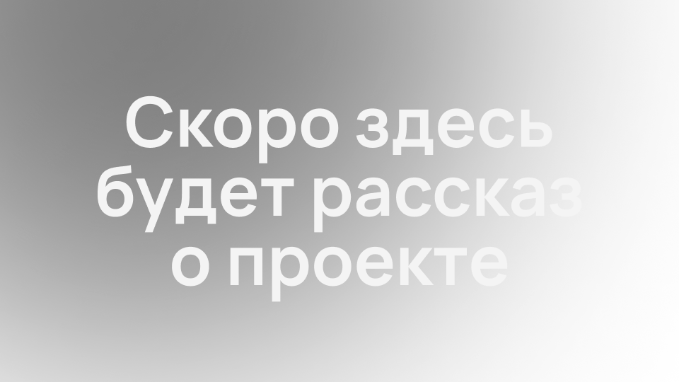
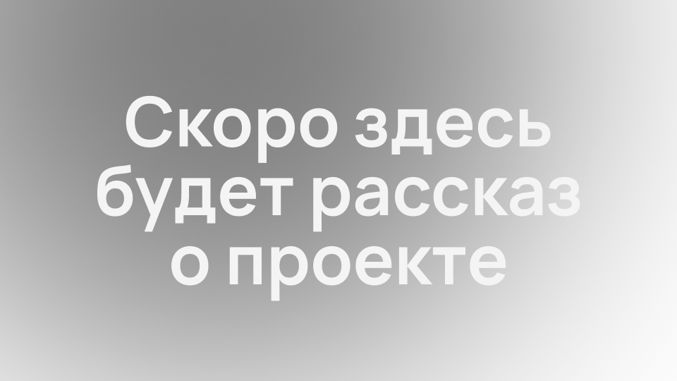
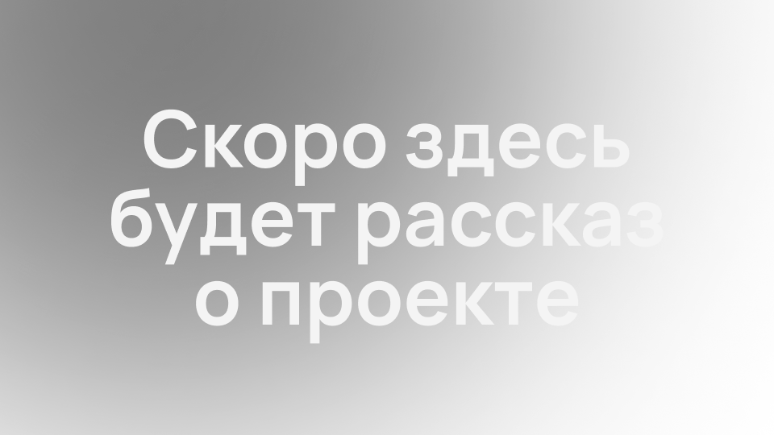
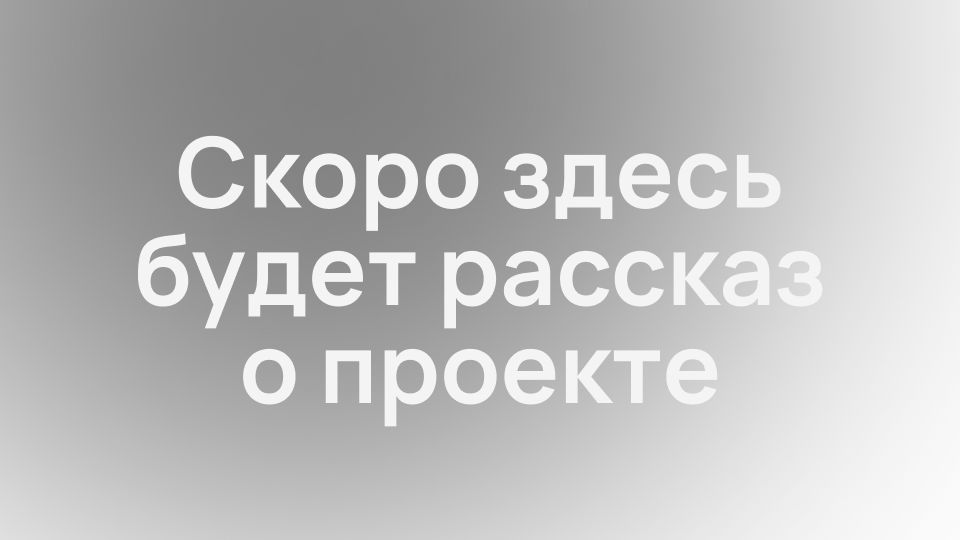

Привет! Я — Валерий Дмитриев, дизайнер.
Умею создавать сайты, презентации
и инфографику.
 



Люблю проекты с большой долей изобретательства и сложными техническими задачами.
Опыт работы — 3,5 года.
Студия Артемия Лебедева, 2024–2025
Навыки: верстка презентаций и многостраничных макетов, настройка шаблонов и мастер-макетов, автоматизация верстки, ресайзы и подготовка к печати и публикации в вебе, HTML и CSS, сборка дизайн-систем.
Центр территориального развития Удмуртии, 2022–2024
Навыки: верстка презентаций и многостраничных макетов, настройка шаблонов и мастер-макетов, автоматизация верстки, ресайзы и подготовка к печати и публикации в вебе, HTML и CSS, сборка дизайн-систем.